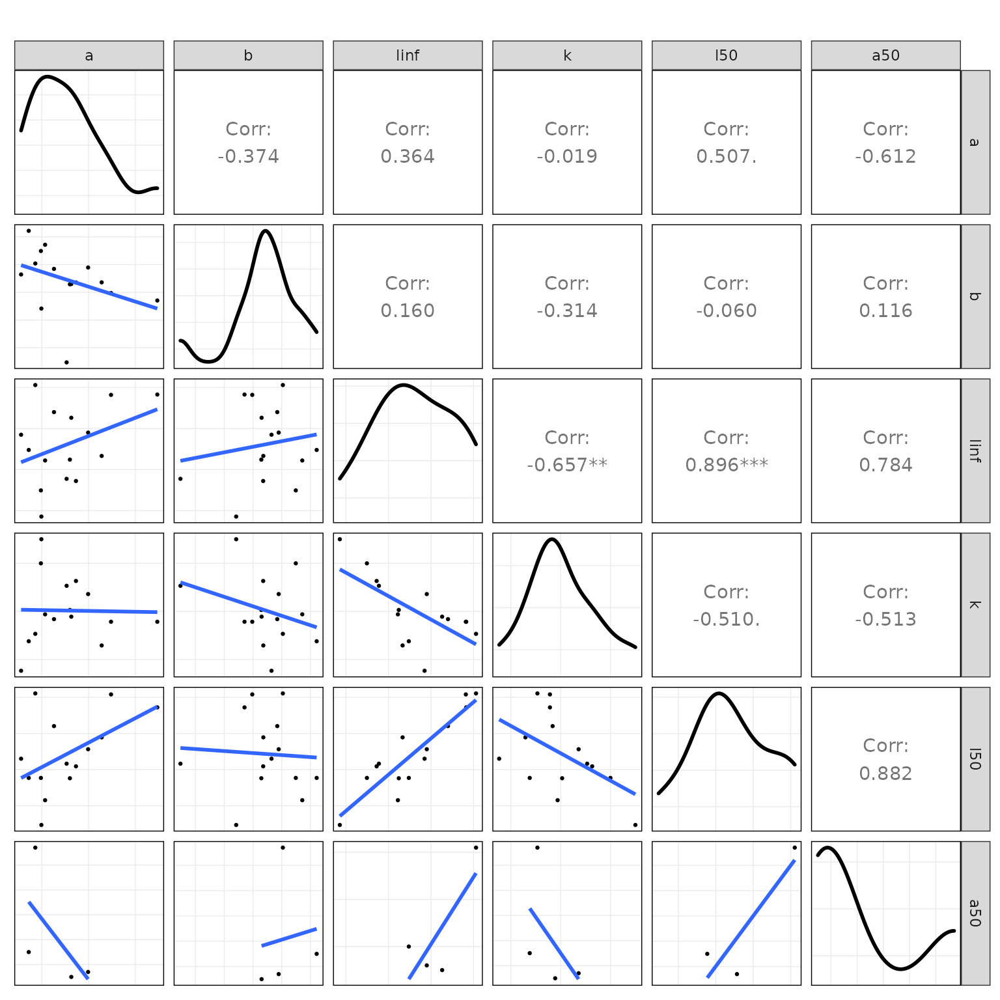
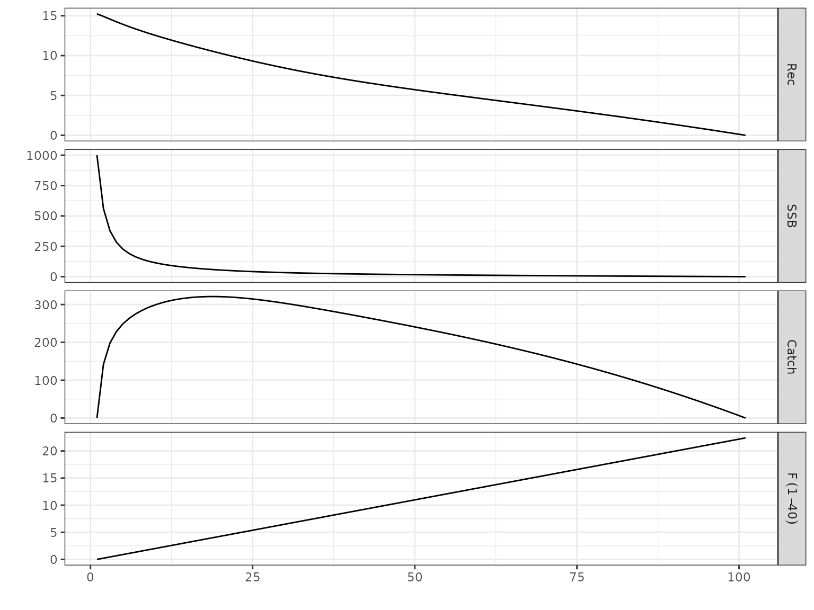

FLife
WKLIFE Life History Relationships
Laurence Kell
26 May, 2020
FLife-wklife.RmdLife history parameters
data(wklife) wklife
species name area stock sex
1 Clupea harengus Herring Celtic Seas her-nis F
2 Pollachius pollachius Pollack North Sea pol-nsea C
3 Molva molva Ling Widely lin-comb C
4 Sebastes norvegicus Rose fish Northern smn-con C
5 Mullus surmuletus Red mullet Celtic Seas mut-comb F
6 Scopthalmus maximus Turbot North Sea tur-nsea F
7 Microstomus kitt Lemon sole North Sea lem-nsea C
8 Lepidorhombus whiffiagonis Megrim North Sea meg-4a6a C
9 Ammodytes spp. Sandeels North Sea san-ns4 C
10 Pleuronectes platessa Plaice Celtic Seas ple-celt F
11 Merlangius merlangus Whiting Celtic Seas whg-7e-k F
12 Melanogrammus aeglefinus Haddock Celtic Seas had-iris C
13 Lophius piscatorius White anglerfish Celtic Seas ang-78ab C
14 Lophius piscatorius White anglerfish North Sea ang-ivvi C
15 Nephrops Shellfish Biscay-Iberia nep-2829 F
a b linf k t0 lmax l50 a50
1 0.00480 3.20 33.0 0.606 NA NA 23.0 NA
2 0.00760 3.07 85.6 0.190 NA NA 47.1 NA
3 0.00360 3.11 119.0 0.140 NA NA 74.0 7.2
4 0.01780 2.97 50.2 0.110 0.08 NA 40.3 NA
5 0.00570 3.24 47.5 0.210 NA NA 16.9 NA
6 0.01490 3.08 66.7 0.320 0.29 NA 34.2 2.2
7 0.01230 2.97 37.0 0.420 NA NA 27.0 NA
8 0.00220 3.34 54.0 0.120 NA NA 23.0 3.0
9 0.00490 2.78 24.0 1.000 NA NA 12.0 NA
10 0.01100 2.96 48.0 0.230 NA NA 22.9 NA
11 0.01030 2.40 38.0 0.380 -1.01 NA 28.0 NA
12 0.01130 2.96 79.9 0.200 -0.36 NA NA 2.0
13 0.01980 2.90 105.6 0.180 -0.38 133 73.0 NA
14 0.02970 2.84 106.0 0.180 NA NA 61.0 NA
15 0.00056 3.03 65.0 0.065 NA NA 30.0 NA
Figure 1 Pairwise scatter plots of life history parameters.
Equilibrium Dynamics
Create an FLPar
wkpar=as(wklife[,6:13],"FLPar") attributes(wkpar)[names(wklife)[1:5]]=wklife[,1:5]
Then use life history relationships to estimate missing values
par <- lhPar(wkpar)
and then to derive vectors for processses such as natural mortality
eql=lhEql(par)
sel<-function(x) catch.sel(x)%/%fapex(catch.sel(x)) ggplot(FLQuants(eql,"m","catch.sel"=sel,"mat","catch.wt"))+ geom_line(aes(age,data,col=attributes(wkpar)$name[iter]))+ facet_wrap(~qname,scale="free")+ scale_x_continuous(limits=c(0,15))+ guides(colour=guide_legend(title="Species",title.position="top"))

Figure 2 Vectors of m, selection pattern, maturity and weight-at-age.
and estimate equilibrium dynamics and reference points, e.g. for lemon sole
plot(iter(eql,3))
Figure 3 Equilibrium curves for ling.
Simulation
Create a forward projection, i.e. an FLStock from an equilibrium object

Figure 4 Simulate a stock with increasing F
Software Versions
- R version 4.0.0 (2020-04-24)
- FLCore: 2.6.15
- FLPKG:
- Compiled: Tue May 26 10:28:33 2020
- Git Hash: 9dfe294
Acknowledgements
This vignette and many of the methods documented in it were developed under the MyDas project funded by the Irish exchequer and EMFF 2014-2020. The overall aim of MyDas is to develop and test a range of assessment models and methods to establish Maximum Sustainable Yield (MSY) reference points (or proxy MSY reference points) across the spectrum of data-limited stocks.